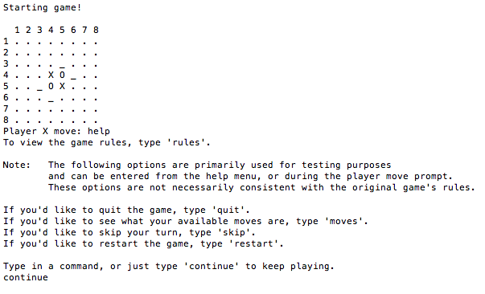

Play as your favorite classic hero Pac-Man, except with a twist. Pac-Man is packing this time, and he's taken the gloves off. Eliminate as many ghosts as you can, level up Pac-Man's abilities to fend off the swarm, and eat the food as it appears to make the hunters become the hunted!
A 2D sidescroller that tells the story of a StarCraft marine from Peachtree City, Georgia that lands in hostile territory. Defend yourself from the relentless zerg enemies and try to touch base with your protoss allies. But there's something strange going on at this planet, so be careful...
A tutorial of how to use Unity's game engine that integrates JavaScript / C# to program game logic. This tutorial was followed by example from the text "Unity 3.x Game Development Essentials" by Will Goldstone.
A simplistic game in Unity designed for CSCI4070 - Game Programming class that had to meet specific requirements: day and night cycle, resemble mine craft in concept (gathering/building objects to survive), and fend off basic enemies. Jump into valley like environment, find a tool, gather supplies, and build a shelter. If you light a fire, you might even be able to light a torch and explore some caves.
Not exactly a game, but a site for games! Ever heard of Rotten Tomatoes? Well our team designed a Rotten Tomatoes-esque site for crowd sourcing reviews from gamers like you and me. My role in this project was to sketch wireframes / design the front end of the application using the Twitter Bootstrap framework, as well as designing banners/logos/icons for the site using Adobe Photoshop. Go ahead and check it out! Sign up and review some of our games, and maybe we'll dress this up / develop it even further!
A pathfinding program implemented in Java. Eventually I may extend this to an embedded web application to view like the others listed above, but for now I am just supplying my code. Instructions on how to run this are on the download page. This program allows you to get a glimpse at how some games may find optimal paths from one object to another in the game environment. Included on the side of the GUI is a slider for adjusting the speed - allows a more in depth look at the algorithm, as well as a chooser for selecting different maps to run.

Busting out the big guns here! This was the first game I ever made with a GUI (Graphical User Interface). It was coded in Java during my CSCI1302 class. Needless to say, it's not that impressive, but for nostalgia purposes, it's great. The rules are simple: the snake eats the food, he gets bigger, the snake starts moving faster and can not collide with either his body or any walls. Go for a high score! Like the Astar game, this is a java program. To run it requires a download and a small amount of commands to run. Instructions are in the link.

For those of you more comfortable reading from the terminal/command prompt - this is a version of the classic game "Reversi". This game has no GUI, but was the first *complicated* game I took on as a project in school. This involves two difficulties of AI, and the player can even play a buddy! (on the same computer of course.) If you're not familar with reversi, take a look here. If time permits, I will get around to creating this game with a GUI.